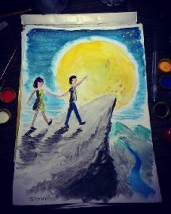
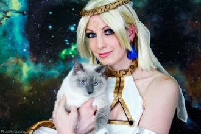
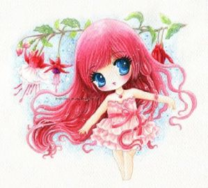

В теле, спрятана любовь. Не верю ей, она давно ведет свою игру. Вместе, единый симптом. Но есть ли, есть ли что-то после, не пойму?

До рассвета всего чуть-чуть. Где-нибудь или как-нибудьМы живем обгоняя дни, одни. Опрокинулся лунный круг,Снова замерло все вокруг,

Только ты почаще мелькайНа секунду там, в облаках. Слёзы - это пусть, А я же сильная, тебя дождусь. Знаешь, а сейчас у нас снег.
Почему создали сами. Эту пропасть между нами. Я отвечу, если можно. Без тебя так сложно. Дни менялись, дни летели.
Белую поляну накрывает зима. И запахло елками в наряженных домах. Спрячем в стол дела, за окно суету. Нам небе зажигает эта ночь раз в году.

Моя любовь подобна сказке,Но тебе я никогда не расскажу её. Зачем я ошибаюсь так часто? Отчего одной дорогой не идём? Любовь моя подобна свету,
Он такой, ему другим быть нельзя. Твёрдый характер, смелые глаза. Он такой, и я в него влюбилась. В 5-ом классе, не получилось.
Где дышала тобою я,Там сжигала сама себя.Ты разбил сердце надвое,Но осталась одна твоя. Нежное тело моё в ночь опускается,
Девять жизней, сто дорог. Я прошла, а кто-то не смог. Поверить в это и потерялся где-то. Но если так нечестно всё. Зачем сейчас мне так легко?
Давай представим, что это рай. Над красными крышами желтое солнце. И ты дотронешся так невзначай. Случайным прохожим ко мне обернешся.
When I get chills at nightI feel it deep inside without you, yeahKnow how to satisfyKeeping that tempo right without you, yeah
Милая, как же трудно мне без тебя. Как же холодно, без улыбок твоих и тепла. Любимая, мы растратили нежность зря.
А ты всё плачешь по ночамИ у подъезда плачешь тоже.Течёт слеза по твоим щекамПри виде кошки - дрожь по коже.
Я - одинокий человек,И я гуляю сам с собой,Ведь у меня нет друзейИ не было никогда!
Я смотрел, а глаза, падали-падали. Если так, без тебя, надо ли, надо ли. Может быть, ты уснёшь, а я пойду искать. Где же мы, всё потеряли.
[Verse 1] My life is a movie and everyone's watching. So let's get to the good part and past all the nonsense.
Текут года, блестит вода. Мы словно в зеркало, видим в ней себя. В твоей руке моя рука,И счастлив я, что нашел тебя.
Пульс мой неровный. Ты - мой неверный. Гонишь опять, снова и снова. Небо всё ближе. И так приятно, стало дышать.
О нет, похоже ты слишком близко. Я проиграла этот бой твоим глазам. Но даже если я теперь в зоне риска,Я все равно буду с тобою до конца.
Припев:Как красиво ты молчишь, когда рядом с ней,Но мне уже не больно, я сильней. Крадётся твоя тень за моей спиной,